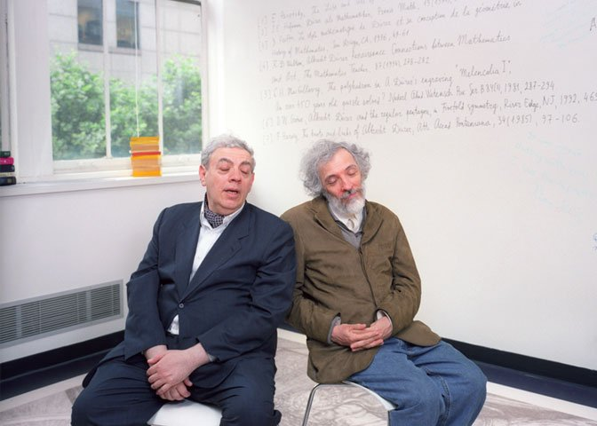

1. 인물 프로필과 사진

사진 출처 표시: PBS NOVA의 Chudnovsky 형제 인터뷰 사진을 우선 표시하도록 구성했습니다. 네트워크 또는 원본 사이트 정책에 따라 이미지가 보이지 않으면 출처 링크를 눌러 확인하세요.
| 항목 | 내용 |
|---|---|
| 이름 | David Volfovich Chudnovsky / Gregory Volfovich Chudnovsky |
| 분야 | 수론, 계산수학, 슈퍼컴퓨팅, 알고리즘, 영상처리 |
| 대표 업적 | Chudnovsky 알고리즘 개발, 원주율 세계 기록급 계산, 수학 기반 고성능 계산 연구 |
| 특징 | 형제가 오랫동안 공동 연구를 수행했으며, 직접 만든 슈퍼컴퓨터로 π 계산 기록을 세웠다. |
Chudnovsky 알고리즘은 한 항마다 약 14.18자리의 정확도를 얻기 때문에 14000자리 계산에는 약 990개 정도의 항이 필요합니다.
2. Chudnovsky 형제 업적·프로필·일화 12문장
| No | English | 한글 번역 |
|---|---|---|
| 1 | David and Gregory Chudnovsky are mathematician brothers best known for their work on high-precision computation of π. | David와 Gregory Chudnovsky는 원주율 π의 고정밀 계산 연구로 가장 잘 알려진 수학자 형제이다. |
| 2 | They were born in Kyiv, then part of the Ukrainian SSR, and later continued their careers in the United States. | 그들은 당시 우크라이나 소비에트 사회주의 공화국에 속했던 키이우에서 태어났고, 이후 미국에서 연구 활동을 이어 갔다. |
| 3 | Their research belongs mainly to number theory, mathematical physics, algorithms, and advanced computation. | 그들의 연구 분야는 주로 수론, 수리물리학, 알고리즘, 고급 계산 분야에 속한다. |
| 4 | The Chudnovsky algorithm, published in the late 1980s, is based on Ramanujan-type rapidly convergent series. | 1980년대 후반에 발표된 Chudnovsky 알고리즘은 라마누잔 계열의 빠르게 수렴하는 급수에 바탕을 둔다. |
| 5 | A remarkable feature of the algorithm is that each additional term gives about fourteen more correct decimal digits of π. | 이 알고리즘의 놀라운 특징은 항을 하나 추가할 때마다 원주율의 정확한 소수 자리가 약 14자리씩 늘어난다는 점이다. |
| 6 | The brothers built a homemade supercomputer called m-zero using mail-order parts. | 형제는 우편 주문 부품을 이용해 m-zero라는 자체 제작 슈퍼컴퓨터를 만들었다. |
| 7 | Their apartment-based computing project became famous because it showed that mathematical insight can rival expensive institutional machines. | 아파트에서 진행된 그들의 계산 프로젝트는 수학적 통찰이 비싼 기관용 컴퓨터와 경쟁할 수 있음을 보여 주었기 때문에 유명해졌다. |
| 8 | They used their machines to compute billions of digits of π and to investigate whether the digits might hide deeper rules. | 그들은 직접 만든 기계로 원주율 수십억 자리를 계산하고, 그 숫자 속에 더 깊은 규칙이 숨어 있는지 탐구했다. |
| 9 | Their work also influenced modern record-setting π computations, where Chudnovsky-type formulas remain central. | 그들의 연구는 현대의 원주율 세계 기록 계산에도 영향을 주었으며, Chudnovsky 계열 공식은 여전히 핵심적으로 사용된다. |
| 10 | Beyond π, they applied mathematics and computing to digital imaging, including art-preservation projects at the Metropolitan Museum of Art. | 원주율 연구를 넘어, 그들은 메트로폴리탄 미술관의 예술 보존 프로젝트를 포함한 디지털 영상 처리에도 수학과 계산을 적용했다. |
| 11 | Their story is often used to show that algorithms, not only hardware, determine the real power of computation. | 그들의 이야기는 계산의 진짜 힘이 하드웨어뿐 아니라 알고리즘에 의해 결정된다는 사실을 보여 주는 사례로 자주 사용된다. |
| 12 | For students, the Chudnovsky brothers offer a powerful lesson: deep theory and practical programming can work together. | 학생들에게 Chudnovsky 형제는 깊은 이론과 실제 프로그래밍이 함께 작동할 수 있다는 강력한 교훈을 준다. |
3. Chudnovsky 알고리즘 핵심 수식
π = 426880√10005 ÷ Σk=0∞ [ (6k)! × (13591409 + 545140134k) ÷ ((3k)! × (k!)³ × (−262537412640768000)k) ]
프로그래밍에서는 팩토리얼을 매번 직접 계산하지 않고, 이전 항에서 다음 항을 빠르게 갱신하는 점화식 형태를 많이 사용합니다.
4. 14자리부터 14000자리까지 근사값을 구하는 파이썬 코드
from decimal import Decimal, getcontext, ROUND_FLOOR
from pathlib import Path
import math
# ==========================================================
# Chudnovsky 알고리즘으로 π를 14자리부터 14000자리까지 저장
# ==========================================================
MAX_DIGITS = 14000 # 소수점 이하 최대 자리수
STEP = 14 # 14자리, 28자리, 42자리, ... 형태로 저장
EXTRA_PRECISION = 30 # 계산 안정성을 위한 여유 정밀도
OUT_DIR = Path("pi_outputs")
# Decimal 전체 계산 정밀도 설정
getcontext().prec = MAX_DIGITS + EXTRA_PRECISION
def chudnovsky_pi(digits):
"""digits: 소수점 이하 원하는 자리수"""
# 한 항당 약 14.18자리 정확도 증가
terms = math.ceil(digits / 14.18) + 2
C = 426880 * Decimal(10005).sqrt()
M = 1
L = 13591409
X = 1
K = 6
S = Decimal(L)
for i in range(1, terms):
# M은 (6k)! / ((3k)! (k!)^3)에 해당하는 계수 부분
M = (M * (K**3 - 16 * K)) // (i**3)
# L은 13591409 + 545140134k
L += 545140134
# X는 (-262537412640768000)^k
X *= -262537412640768000
# 급수의 다음 항을 누적
S += Decimal(M * L) / X
# 다음 M 계산을 위한 K 갱신
K += 12
return C / S
def decimal_places_string(x, digits):
"""Decimal x를 소수점 이하 digits자리 문자열로 변환"""
q = Decimal(1).scaleb(-digits) # 10^(-digits)
return str(x.quantize(q))
def main():
OUT_DIR.mkdir(exist_ok=True)
# 14000자리까지 한 번 계산한 뒤 필요한 자리수만 잘라서 사용
pi_value = chudnovsky_pi(MAX_DIGITS)
summary = []
for d in range(STEP, MAX_DIGITS + 1, STEP):
text = decimal_places_string(pi_value, d)
file = OUT_DIR / f"pi_{d:05d}_digits.txt"
file.write_text(text, encoding="utf-8")
summary.append(f"{d}자리: {text[:60]}...")
# 14000이 14의 배수이므로 마지막 파일은 pi_14000_digits.txt
(OUT_DIR / "summary.txt").write_text("\n".join(summary), encoding="utf-8")
print("완료!")
print(f"저장 폴더: {OUT_DIR.resolve()}")
print(f"마지막 파일: pi_{MAX_DIGITS:05d}_digits.txt")
print(decimal_places_string(pi_value, 100))
if __name__ == "__main__":
main()5. 코드 상세 설명
| 코드 | 설명 |
|---|---|
MAX_DIGITS = 14000 | 원주율을 소수점 이하 최대 14000자리까지 계산하도록 설정합니다. |
STEP = 14 | 14자리, 28자리, 42자리처럼 14자리 간격으로 결과 파일을 만듭니다. |
getcontext().prec | Decimal 계산 정밀도를 설정합니다. 14000자리보다 약간 더 크게 잡아 반올림 오차를 줄입니다. |
terms = math.ceil(digits / 14.18) + 2 | Chudnovsky 알고리즘은 항 하나당 약 14.18자리 정확도를 얻기 때문에 필요한 항 수를 계산합니다. |
C = 426880 * Decimal(10005).sqrt() | 공식의 앞부분 상수인 426880√10005를 계산합니다. |
M | 팩토리얼 계수 부분을 저장합니다. 팩토리얼을 직접 계산하지 않고 빠르게 갱신합니다. |
L | 13591409 + 545140134k 부분입니다. 반복할 때마다 545140134만큼 증가합니다. |
X | (−262537412640768000)^k에 해당합니다. 매우 큰 분모 역할을 합니다. |
S += Decimal(M * L) / X | 현재 항을 전체 급수 합 S에 더합니다. |
return C / S | 최종적으로 π 값을 반환합니다. |
quantize | 원하는 소수점 이하 자리수에 맞추어 문자열로 출력합니다. |
file.write_text | 각 자리수별 원주율 근사값을 TXT 파일로 저장합니다. |
6. 실행 팁
- Python 기본 라이브러리만 사용하므로 별도 설치가 필요 없습니다.
- 14000자리 계산은 일반 PC에서도 가능하지만, 환경에 따라 시간이 조금 걸릴 수 있습니다.
- 결과 파일은
pi_outputs폴더에 저장됩니다. - 처음 테스트할 때는
MAX_DIGITS = 140정도로 낮춰 실행해 보세요. - 모든 14자리 간격 파일이 필요 없으면
STEP = 140또는STEP = 1000으로 바꾸면 됩니다.